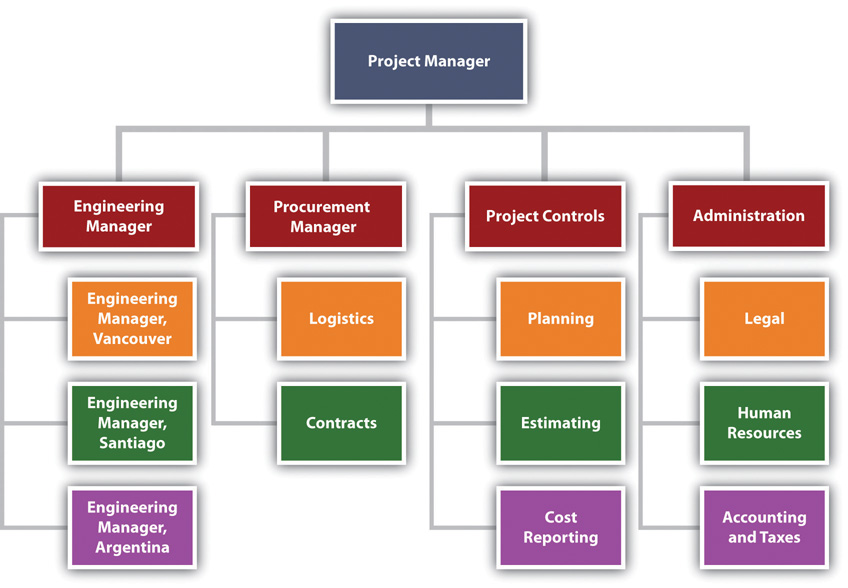

This chapter provides an overview of the organizational structure and phases of a project. The complexity level of a project influences the organizational structure and the resources and skills needed at each phase. This chapter also provides an overview of the typical functions within the organizational structure of a project.
Projects, by definition, have a beginning and an end. They also have defined phases between the project kickoff and project closeout. A phase represents a grouping of similar activities that has a very loosely defined beginning and end. Phases are also typically sequential, where the prior phase is essentially complete before the beginning of the next phase. Phases do not have clear-cut end dates and some activities in an early phase of the project will continue into the later phases. This is in contrast to project beginning and ending dates and milestone dates, which do have clearly defined dates with the expectation that these dates will be met.
The initiation phaseActivities associated with starting the project. of a project represents the activities associated with starting up the project. Activities during the initiation phase include project kickoff meetings, identifying the project team, developing the resources needed to develop the project plan, and identifying and acquiring the project management infrastructure (space, computers). On projects where the scope of work for the project is not well defined, the project team will invest time and resources in developing a clearer scope of work. On projects where the major project stakeholders are not aligned, the project team will expend resources and time creating stakeholder alignment.
The activities that occur within the initiation phase of the project vary on each project. They include all the activities necessary to begin planning the project. The initiation phase typically begins with the assignment of the project manager and ends when the project team has sufficient information to begin developing a detailed schedule and budget. Unlike project milestones, some activities associated with project initiation may be delayed without delaying the end of the project. For example, it is advantageous for the project to have the major project stakeholders aligned from the beginning, but sometimes it is difficult to get the commitment from stakeholders to invest the time and resources to engage in an alignment process. Sometimes it is only after stakeholders begin observing progress on a project that the project manager can facilitate the stakeholder alignment processes.
The knowledge, skills, and experience needed on the project can vary in each phase. During the early phases of a project, the project leadership needs good conceptual skills, the ability to build a team, and the experience to build a project roadmap. During project closeout, the project leadership provides a high degree of motivation and attention to details. On a large project, lasting two or more years, it is common to see the project management team change leadership to provide skills that are appropriate to the final phases of the project.
The Project Management InstituteProject Management Institute, Inc., A Guide to the Project Management Body of Knowledge (PMBOK Guide), 4th ed. (Newtown Square, PA: Project Management Institute, Inc., 2008), 11–16. identifies four major phases of a project as characteristics of the project life cycle. These four life-cycle phases are initiation, planning, execution, and project closeout. The initiation phase, which PMI labels “starting the project,” includes all the activities necessary to start the project. These activities include holding the project kickoff meeting, confirming or developing conceptual schedules and budgets, and acquiring project execution resources such as office space, computers, and communications equipment.
The planning phaseDeveloping detailed schedules; plans for staffing, procurement, and project controls; and a budget., which PMI labels “organizing and preparing,” includes the development of more detailed schedules and a budget. The planning also includes developing detailed staffing, procurement, and project controls plans. The emphasis of the planning phase is to develop an understanding of how the project will be executed and a plan for acquiring the resources needed to execute it. Although much of the planning activity takes place during the planning phase, the project plan will continue to be adjusted to respond to new challenges and opportunities. Planning activities occur during the entire life of the project.
The execution phaseCarrying out the planned work., labeled by PMI as “carrying out the work,” includes the major activities needed to accomplish the work of the project. On a construction project, this would include the design and construction activities. On an information technology (IT) project, this would include the development of the software code. On a training project, this would include the development and delivery of the training.
The closeout phaseShutting down the project, including transferring staff, closing offices, archiving documents, and finishing punch list items.—or using PMI’s nomenclature, “closing of the project”—represents the final stage of a project. Project staff is transferred off the project, project documents are archived, and the final few items or punch list is completed. The project client takes control of the product of the project, and the project office is closed down.
The amount of resources and the skills needed to implement each phase of the project depends on the project profile. Typically, a project with a higher-complexity profile requires more skills and resources during the initiation phase. Projects with a profile that indicates problems with alignment among key stakeholders or political and legal issues will require specialized resources to develop plans that address these issues early in the project. A project with a lower complexity level will invest more resources in the execution phases to execute the project as effectively and efficiently as possible.
A United States Construction company won a contract to design and build the first copper mine in northern Argentina. There was no existing infrastructure for either the mining industry or large construction projects in this part of South America. During the initiation phase of the project, the project manager focused on defining and finding a project leadership team with the knowledge, skills, and experience to manage a large complex project in a remote area of the globe. The project team set up three offices. One was in Chile, where large mining construction project infrastructure existed. The other two were in Argentina. One was in Buenos Aries to establish relationships and Argentinean expertise, and the second was in Catamarca—the largest town close to the mine site. With offices in place, the project start-up team began developing procedures for getting work done, acquiring the appropriate permits, and developing relationships with Chilean and Argentine partners.
During the planning phase, the project team developed an integrated project schedule that coordinated the activities of the design, procurement, and construction teams. The project controls team also developed a detailed budget that enabled the project team to track project expenditures against the expected expenses. The project design team built on the conceptual design and developed detailed drawings for use by the procurement team. The procurement team used the drawings to begin ordering equipment and materials for the construction team; to develop labor projections; to refine the construction schedule; and to set up the construction site. Although planning is a never-ending process on a project, the planning phase focused on developing sufficient details to allow various parts of the project team to coordinate their work and to allow the project management team to make priority decisions.
The execution phase represents the work done to meet the requirements of the scope of work and fulfill the charter. During the execution phase, the project team accomplished the work defined in the plan and made adjustments when the project factors changed. Equipment and materials were delivered to the work site, labor was hired and trained, a construction site was built, and all the construction activities, from the arrival of the first dozer to the installation of the final light switch, were accomplished.
The closeout phase included turning over the newly constructed plant to the operations team of the client. A punch list of a few remaining construction items was developed and those items completed. The office in Catamarca was closed, the office in Buenos Aries archived all the project documents, and the Chilean office was already working on the next project. The accounting books were reconciled and closed, final reports written and distributed, and the project manager started on a new project.
Project Phases
Consider a personal project that you have been involved with in the last few years, such as moving your residence, buying a car, or changing jobs. Describe the activities related to that project that fit into each of the four project phases.
There is no single organizational approach to projects. Each project is organized to accomplish the work effectively and efficiently. Several factors influence the organizational approach to execute a project. The complexity profile of a project, the culture of the parent organization, the preferences of the project manager, the knowledge and skills of the team, and a parent organization with a project management office are examples of factors that influence the project’s organization.
In developing the project organizational structure, the project manager considers the span of controlThe number of people reporting to a manager. for each manager. The span of control represents the number of people reporting to a manager. For example, the project manager does not want all the engineers on a project reporting to the engineering manager and assigns senior engineers to report to the engineering manager with other engineers reporting to the senior engineers.
The engineering manager can organize the engineering reporting structure so that the various engineering discipline managers would report to him or her. For example, the structural, electrical, and mechanical engineering team leaders would report to the engineer manager. On a larger, more complex project, the engineer manager may establish area team leaders and have the structural, electrical, and mechanical engineers report to an area team leader. If the project is geographically dispersed, with the engineering office staff in different cities working on the project, then structuring the engineering function by area provides better coordination and control (see Figure 3.1 "Decreasing Span of Control by Increasing Levels of Reporting").
Figure 3.1 Decreasing Span of Control by Increasing Levels of Reporting

The organization on the left has seventy-one engineers reporting to the same person. The organization on the right creates two additional positions and reduces the span of control to thirty-seven and thirty-four, respectively.
Most projects have similar functions that are important to successfully managing the project. Included among these are the following:
Figure 3.2 Typical Project Organization

On smaller projects, more than one function can be managed by one person. On larger projects, large teams may be needed to accomplish the work within the function.
The project sponsor is outside the day-to-day operations of the project and has the organizational authority to provide resources and overcome barriers for the project. The project sponsor is typically a leader in the parent organization with an interest in the outcome of the project. As a leader in the parent organization, the project sponsor can provide input into the project scope and other documents that define project success. The guidance and support from the project sponsor enhances the ability of the project to successfully meet the parent organization’s objectives.
A training organization in South Carolina assigned a project sponsor to every project. For smaller projects, the regional manager fulfilled the role of project sponsor. On larger, more complex projects, the operations manager was the project sponsor. The vice president was the project sponsor of the three or four most complex projects, and the president was the project sponsor only on projects with a high degree of political risk. This approach to assigning project sponsors assured that each project had an organizational advocate that could address barriers and provide direction and resources. The project sponsor, in this organization, developed a relationship with a senior representative of the client organization, reviewed monthly reports, and conducted thorough quarterly reviews.
Project managers often have the breadth of responsibility associated with corporate chief executive officers (CEOs). The project manager facilitates the start-up of a project and develops the staff, resources, and work processes to accomplish the work of the project. He or she manages the project effectively and efficiently and oversees the closeout phase. Some projects are larger than major divisions of some organizations, with the project manager responsible for a larger budget and managing more risk than most of the organizational leaders. A mining company that builds a new mine in South Africa, an automobile manufacturer that creates a new truck design, and a pharmaceutical company that moves a new drug from testing to production are examples of projects that may consume more resources in a given year than any of the organization’s operating divisions.
The function of the project manager can vary depending on the complexity profile and the organizational structure. Defining and managing client expectations and start-up activities, developing the scope, and managing change are functions of the project manager. On some projects, the project manager may provide direction to the technical team on the project. On other projects, the technical leadership might come from the technical division of the parent organization.
Although the functional responsibilities of the project manager may vary, the primary role is consistent on every project. The primary role of the project manager is to lead, to provide a vision of success, to connect everyone involved in the project to that vision, and to provide the means and methods to achieve success. The project manager creates a goal-directed and time-focused project culture. The project manager provides leadership.
In general, project controlsPlanning function and the function that tracks progress against the plan. is both the planning function and the function that tracks progress against the plan. Project control provides critical information to all the other functions of the project and works closely with the project manager to evaluate the cost and scheduling impact of various options during the life of a project.
Sometimes accounting functions such as payroll, budgeting, and cash management are included within project controls. On larger projects, accounting functions are typically separate because the accounting culture tracks expenses to the nearest penny, and cost estimating and tracking by project controls can often be off by hundreds and sometimes thousands of dollars. The lack of definitive information necessitates the development of cost estimates within ranges that are often inconsistent with accounting practices. Separating these two functions allows each to operate within their own accuracy comfort zone. The following are typical activities included within the project controls function:
The project controls team gathers this information from all the functions on the project and develops reports that enable each functional manager to understand the project plan and progress against the plan at both the project level and the functional level. On large complex projects, some project managers will assign project controls professionals to work within the major functions as well as the project management office. This approach allows each function to plan and track the function’s work in more detail. The project controls manager then coordinates activities across functions.
The approach to purchasing the supplies and equipment needed by the project is related to the complexity profile of the project. A small project with a low complexity level may be able to use the procurement services of the parent organization. In an organization where project resources reside in various departments, the departments may provide the supplies and equipment each team member of the project may need.
A college in South Carolina chartered a number of projects to increase the energy efficiency of the college. The project team included members from various college departments. Each department paid for the time, travel expenses, and supplies needed by the team member from their department. Each team member continued to use the computers and administrative support in their department for project work. The costs for this support was not included in the project budget nor tracked as a project expense. Equipment purchased by the project that was installed to reduce the energy consumption of the college was purchased through the college procurement department and charged to the project.
More complex projects with greater procurement activity may have a procurement person assigned to the project. This same South Carolina college retrofitted a warehouse to create a new training center for industry. A procurement person was assigned to the project to manage the contract with the construction firm remodeling the space, the purchase and installation of the new training equipment, and the purchase of the supplies needed by the project team. All the procurement activity was charged to the project. The procurement person reported to the project manager for better communication on what the project needed and when it needed it. The procurement person participated as a member of the project team to understand and provide input into the costs and scheduling decisions. The procurement person reported to the college procurement manager for developing and implementing project procurement processes that met college procurement policies and procedures.
Figure 3.3

The procurement manager is part of the project team.
On larger, more complex projects, the procurement team has several responsibilities. The team is responsible for procuring the supplies and equipment (such as office supplies and computers) needed for the project team and the supplies and equipment (such as the training equipment) needed to execute the project. On a typical construction project, the procurement team would rent a construction trailer, office supplies, and computers for the project team to establish a construction office at the construction site. The procurement team would also purchase the concrete, rebar, steel, and other material needed to construct the building.
On the large mining project in South America, during the initiation phase of the project, the procurement department arranged for office space and supplies for the engineering teams in Canada, Chile, and Argentina and construction offices at the construction site in Argentina. As the design and engineering progressed, the procurement team managed bids for the major equipment and bids for the preparation of the construction site. The procurement team managed the logistics associated with transporting large equipment from Europe, North America, and Asia to the job site in rural Argentina. After the completion of the project, the procurement team managed the deposal of project property.
On large, complex projects, the procurement team manages at least three types of relationships with companies doing business with the project.
The largest number of purchased items for most projects are commodity items. Commodities are items that can be bought off the shelf with no special modification for the project. These items are typically bid and the lowest prices that can meet the schedule of the project will win the contract. The procurement team assures the company that wins the bid can perform to the contact specifications and then monitors the progress of the company in meeting the projects requirements. Concrete for the project and the cranes leased to the project are examples of commodities. The key to success in managing commodity suppliers is the process for developing the bids and evaluating and awarding the contracts.
The second type of relationship is the vendor relationship. The terms supplier and vendor are often used interchangeably. In this text, suppliers provide commodities, and vendors provide custom services or goods. Suppliers bid on specialized equipment for the project. Engineers will specify the performance requirements of the equipment, and suppliers that have equipment that meets the requirements will bid on the project. The engineering team will assist in the evaluation of the bids to assure compliance with specifications. The lowest bid may not win the contract. Sometimes the long-term maintenance costs and reliability of the equipment may indicate a high price for the equipment. The key to success is the development of clear performance specifications, good communication with potential bidders to allow bidders to develop innovative concepts for meeting the performance requirements, and a bidding process that focuses on the goals of the project.
The third type of project procurement relationship is the partnership. Sometimes the partnership is legally defined as a partnership, and sometimes the success of each partner is so closely tied together that the relationship operates as a partnership. On the South American project, the project team partnered with an Argentinean construction company to access the local construction practices and relationship with local vendors. This was a legal partnership with shared profits. The partner also designed and procured some large mining equipment on which the success of the project and the company building the mining equipment depended. With this type of relationship, a senior manager on the project is assigned to coordinate activities with the partner, and processes are put in place to develop shared goals, align work processes, and manage change.
Figure 3.4 Procurement Manager Relationships

The technical management on the project is the management of the technology inherent in the project—not the technology used by the team to manage the project. The technical complexity on a project can vary significantly. The technological challenges required to build a bridge to span a five-hundred-meter canyon are significantly different from those required to span a five-thousand-meter body of water. The technological complexity of the project will influence the organizational approach to the project. The technological complexity for a project reflects two aspects: the newness of the technology and the team’s familiarity with the technology. The newness refers to the degree to which the technology has been accepted in the industry. The more accepted the technology is in the industry usually means that more knowledge and experience will be available to the team. Familiarity refers to the experience the project team has with the technology. The less familiarity the team has with the technology, the more energy and resources the team will expend on managing the technological aspect of the project. For projects with high levels of project technology, a specialist may be hired to advise the technology manager.
A steel company in Indiana purchased a new coal injection technology that would improve the quality of steel, reduce the cost to produce the steel, and reduce air and water pollution. The contract to design and construct the new plant was awarded to an engineering and construction company. No one on the engineering and construction team had experience with the coal injection technology. The client’s team understood the technology and provided guidance to both the project engineering and construction teams. The client owned the coal injection technology, and the engineering and construction team brought the project management technology.
Project quality is often part of the technical manager’s responsibility. On large projects or projects with a high degree of technical complexity, the quality is sometimes a separate function reporting to the project manager. The project quality manager focuses on the quality of the project work processes and not the quality of the client’s product. For example, if the project is to design and construct an automobile factory, the quality manager focuses on the project work processes and meeting the technical specification of the equipment installed by the project team. The project quality manager is not responsible for the quality of the car the plant produces. If the plant functions to the defined project specifications, the quality of the plant output is the responsibility of the plant quality department, and it may take several months for the plant to refine the work processes to meet the design specifications of the car.
On a construction project, the quality manager may test steel welders to assure the welders have the skills and that the welds meet project specifications. On a training project, the quality manager may review the training curriculum and the qualification of the instructors to assure the training provides the knowledge and skills specified by the client. On a drug development project, the quality manager may develop processes to assure the water and other raw material meet specifications and every process in the development process is properly documented.
The administrative function provides project specific support such as the following:
In most organizations, support for these functions is provided by the parent organization. For example, people assigned to the project will get human resources (HR) support from the HR department of the parent organization. Salary, benefits, and HR policies for employees assigned to the project will be supported out of the HR department. The parent organization will provide accounting functions such as determining the cost of cash, taxes, year-end project reports, and property disposal at the end of the project.
The project manager on smaller, less complex projects will have sufficient knowledge about these issues to coordinate with the parent organization’s functional leaders. On more complex projects, the project may have an administrative manager responsible for coordinating the administrative functions of the projects. On larger, more complex projects, an administrative function may be established as part of the project team, with many of the functions assigning a resource to the project. In all cases, the administrative function on a project is closely related to the legal and organizational responsibilities of the parent organization and close coordination is important.
The South American mine project has major design work to accomplish in three different design offices: Vancouver, Santiago, and Argentina. The project manager and the leadership team reside in Santiago, Chile. During the design stage of the project, the engineering manager in each engineering office is leading the work with project controls, procurement, and administration, each assigning resources to support the engineering activities at each location. The project engineer manager assigned the engineering work based on the capabilities of the office and coordinates the work between offices. The procurement, project controls, and administrative leaders assign resources to support the work in each office. For example, the project controls manager assigned a planner in each office to support the engineering manager in that office to develop and track the schedule. The project planner in Vancouver supports the development of the engineering schedule in Vancouver and communicates and coordinates with the planning activities in the other locations
When the project construction activities started, project controls, procurement, and administrative resources moved from supporting engineering to supporting the construction activity. The project organizational structure changed as the engineering manager and the engineering effort changed from primarily designing the project to supporting the construction effort, by answering construction questions and developing solutions to construction challenges. The procurement effort changes from managing the bidding and contracting activities to managing the logistics.
Figure 3.5 Organization for Major International Project
Project Organization
Refer to the descriptions of the project functions and determine which manager would take care of each of the following problems. If you think the problem requires the attention of more than one function, explain why.
Recall that the Darnall-Preston Complexity Index (DPCI™) ranks complexity in four categories: external, internal, technological, and environmental. The information provided in this chapter can be used to rate a project’s complexity in the areas of size, organizational complexity, technological newness, and technology familiarity. Scores range from 1 (least complex) to 5 (most complex).
Recall that size is relative to the organization’s comfort zone for projects. Refer to the following descriptions for tips on arriving at a DPCI score for size:
Recall that system complexity is determined by the variety of types of elements and the number of connections there are between elements. Review a chart of the organizational structure that depicts the reporting relationships, the number of people involved, their familiarity with each other, and the amount of cross connections between reporting relationships and functions. Refer to the following descriptions for tips on arriving at a DPCI score for size:
Recall that this category refers to the technology that is part of the project. It might be new technology that is being implemented to make a step change in the efficiency of an operation. Refer to the following descriptions for tips on arriving at a DPCI score for size:
Recall that this category refers to the familiarity of the project team with the technology that is part of the project. Refer to the following descriptions for tips on arriving at a DPCI score for size:
Assigning a score is not an absolutely accurate process. Your objective is to be approximately correct, and some people are not comfortable with this type of estimate. Recall that one of the attributes of a successful project manager is the ability to live with ambiguity. One method that will help when assigning a score is to consider the two extremes. For each factor in the DPCI, consider what the simplest—least complex—scenario would look like, which would be a 1 on the DPCI scale. Next consider what the most complex scenario would be, which would describe a 5. Then, compare actual projects to those two extremes. If it is close to, but not as simple as, the least complex, you would give it a 2. If it is close to, but not as complex as, the most complex scenario you would give it a 4. If it is about in the middle, it rates a 3.
Techniques for Assigning Scores
Refer to the tips for assigning scores to answer the following questions:
Choosing a Complexity Score
Consider a project that involves the merger of computer systems of two banks. The acquiring bank wants to convert the other bank’s computer system to its own software, and the project is to convert all the client account files. The software used by the acquiring bank is relatively new, and only about a third of the project team is familiar with it. Your task is to determine a DPCI rating for the familiarity of the project team with the technology.
Exercises at the end of the chapter are designed to strengthen your understanding and retention of the information recently acquired in the chapter.
Write several paragraphs to provide more in-depth analysis and consideration when answering the following questions.
The exercises in this section are designed to promote an exchange of information among students in the classroom or in an online discussion. The exercises are more open ended, which means that what you find might be completely different from what your classmates find, and you can all benefit by sharing what you have learned.
Many organizations standardize their project development process using templates. The use of templates makes it easier to compare projects and to assure that all the requirements are met. In this exercise, you locate and download a template for creating a scope statement and its completion instructions. The template is used by the State of Virginia. This template and its instructions for completion provide an overview of the structure of a project because the main parts of a project are clearly identified.
Start a web browser program and go to the Office of Enterprise Technology for the State of Virginia at http://www.vita.virginia.gov/oversight/projects/default.aspx?id=567. A list of templates displays, as shown in Figure 3.6 "State of Virginia Project Management Templates".
Open the file. Scroll down to page 2 and display section E, steps 1 through 3, as shown in Figure 3.7 "Description of the Project and Its Scope, Milestones, and Deliverables".
Review your work and use the following rubric to determine its adequacy:
| Element | Best | Adequate | Poor |
|---|---|---|---|
| File name | Ch03ScopeStudentName.doc | Word 2010 version using .docx | Another file name |
| Locate, download, and analyze project templates | Name on first line followed by screen captures of sections E, F, and G of the instructions and page 7 of the template with your name as the project manager | Same as Best | Some screens missing or name not shown as the project manager in the template |